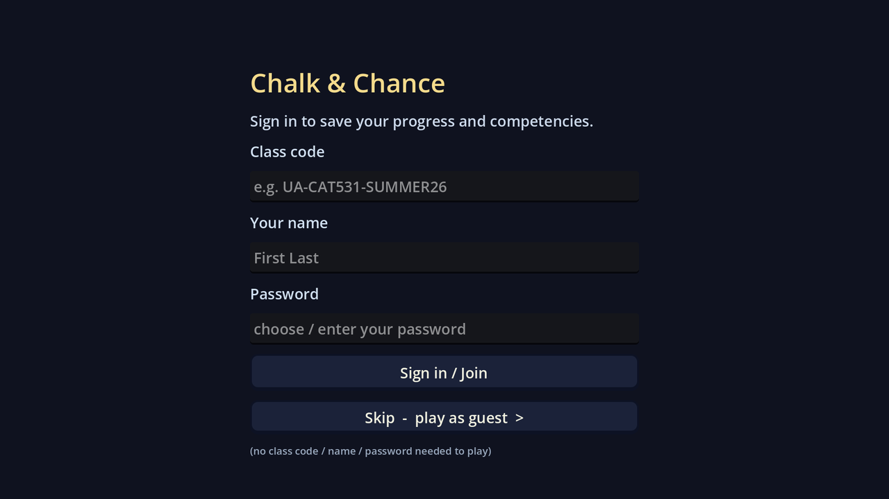
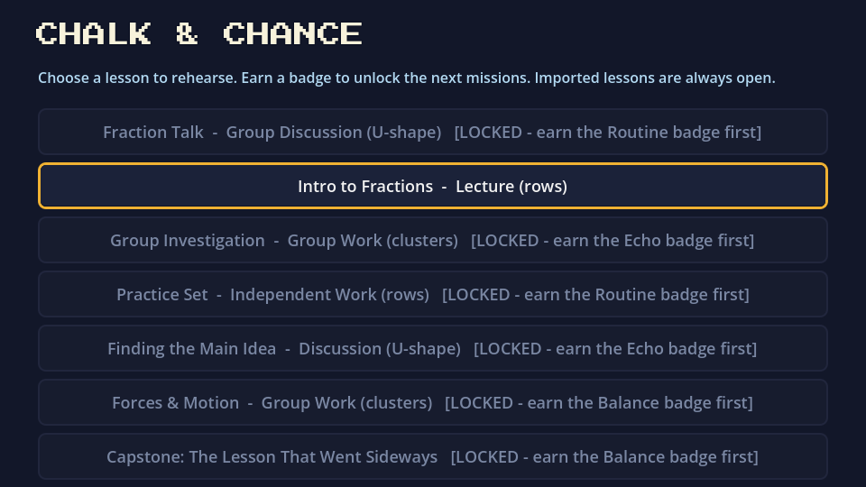
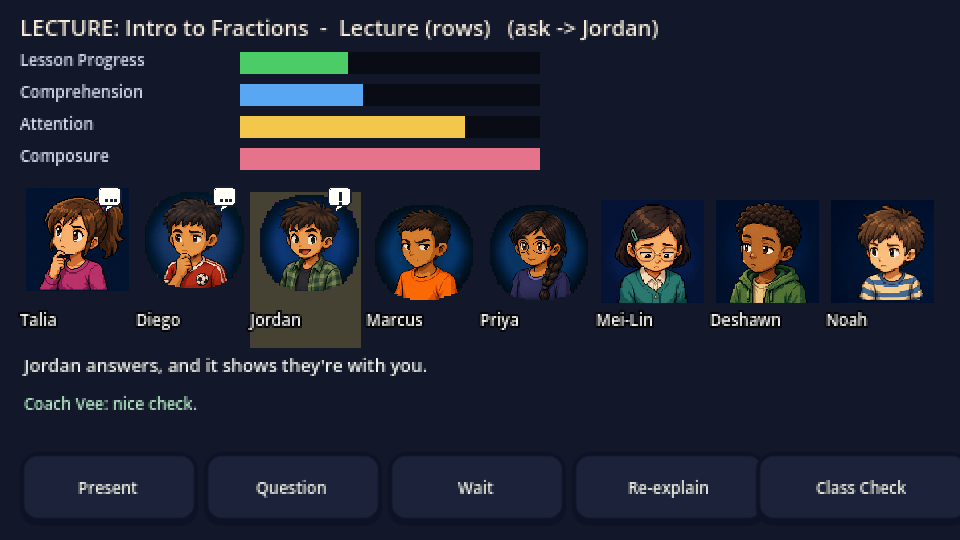
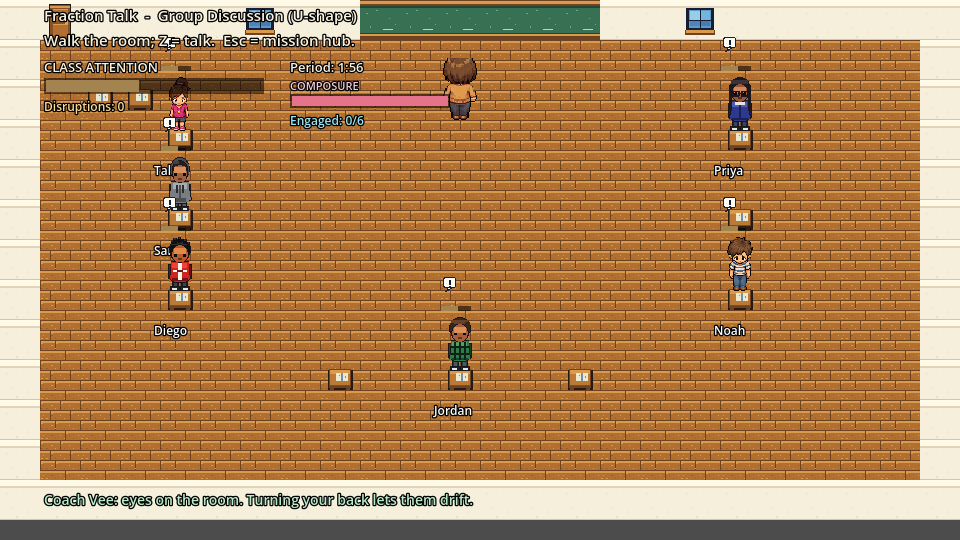
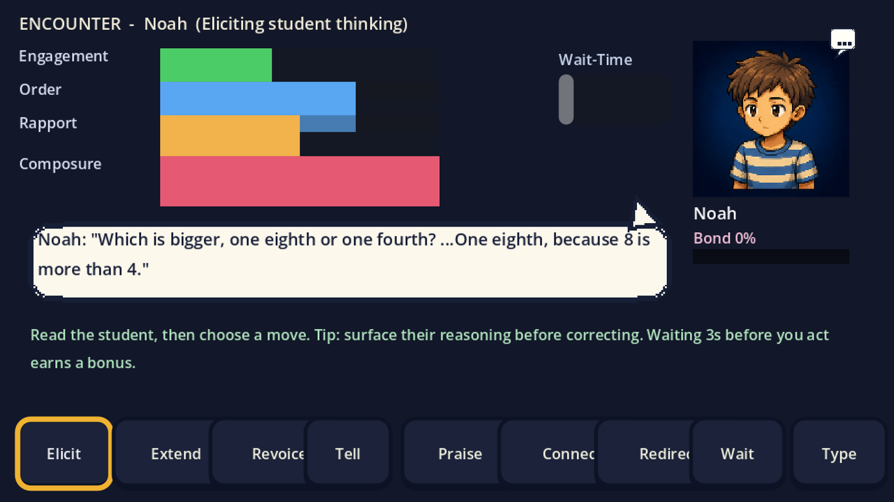
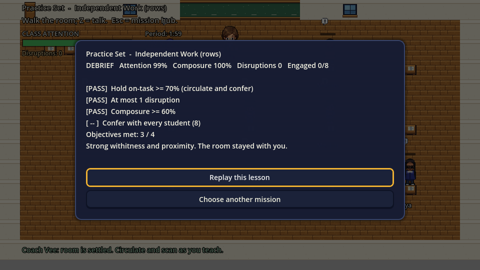
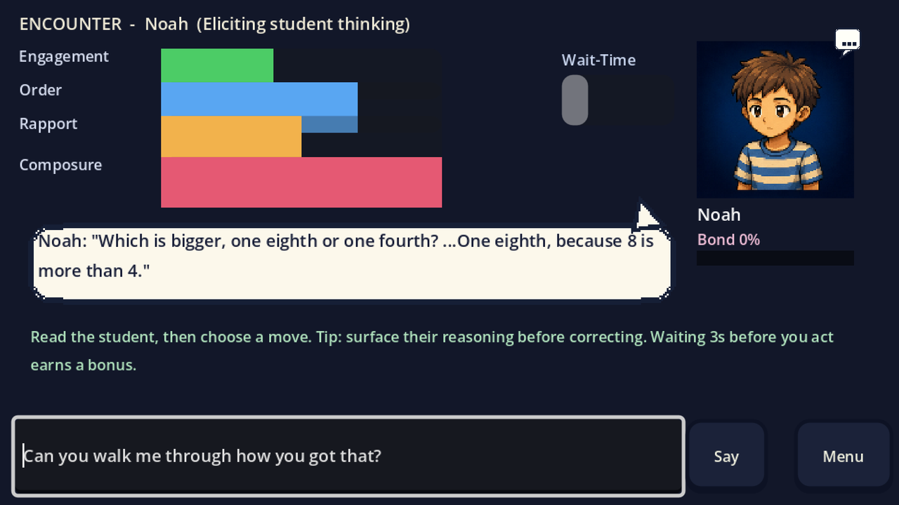
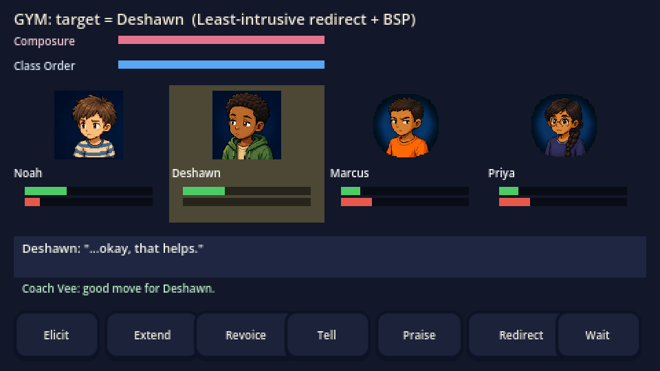
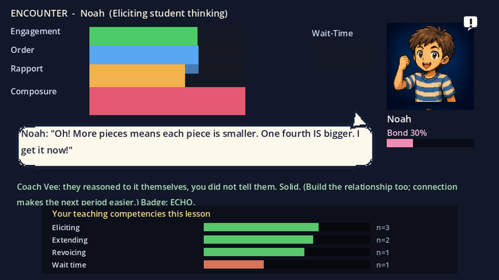
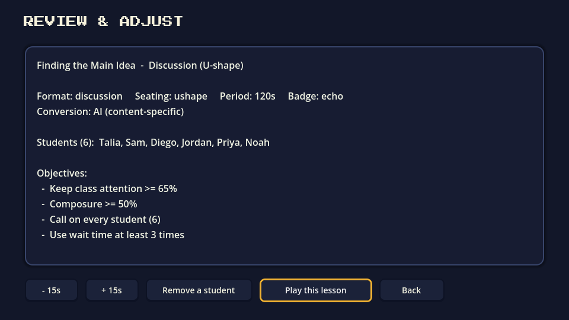

Login
Demo-first entry with no account required.
Godot Web Build + Media Package
A web-playable package revised around first-time player clarity: UI, interaction feedback, accessibility, import preview, and reflection flow.
Playable HTML
The iframe below embeds the index.html web build from this same folder. When hosting, upload the entire dist_web folder so the playable build and showcase work together.
Serve this folder over HTTP instead of opening it as a local file so the WebAssembly files load reliably.
Player guide video
This walkthrough explains how to start the game, what the main buttons do, and how to interpret each activity as teaching practice. English subtitles are embedded in the video and also provided as a WebVTT file.
Fallback screenshot reel






Screenshots
These captures show the main player-facing flows that were reviewed and improved during the beginner QA pass.
Demo-first entry with no account required.
START HERE, badge legend, settings entry.
Question target, wait readiness, action feedback.
Objective checklist and Z/Enter interaction hint.
Move preview, result chips, continue button.

Offline free-text classification and telemetry clarity.

Current target, student need, result feedback.

Evidence count and next practice focus.

Scenario card and user-facing validation.
Detailed player guide
This guide makes the walkthrough explicit. Each step explains what the player sees on screen, what teaching concept to study, and what kind of reflection or feeling the activity is meant to support.
A classroom scene, students, and teacher-facing information rather than a conventional menu puzzle.
The room as a practice space. The game asks you to rehearse teaching decisions, not simply complete a level.
Mistakes are expected data. A confusing moment tells you what to try differently.
A prominent Play demo button and a class sign-in area.
The demo starts immediately. Sign in / Join is for class accounts that need saved progress and instructor tracking.
You do not need credentials to learn the basic flow. Start with the demo first.
Class code, name, password, and guest-play options.
Class code, name, and password are only for assigned courses. Guest play is enough for first-time exploration.
The game is safe to try before you understand every setting.
START HERE, mission rows, badges, and locked missions.
Badges are practice goals: Routine is pacing, Echo is reasoning, Balance is airtime, Mirror is feedback, and Insight is capstone judgment.
Locked missions are not a punishment. They show the sequence of teaching skills the game wants you to build.
Settings and Import a lesson plan.
Settings adjusts comfort: sound, larger text, reduced motion, and dialogue speed. Import turns your own lesson text into a playable scenario.
The game can become closer to your actual teaching context, not just a fixed example.
Students, bars, objective checklist, attention, composure, participation, wait time, and disruptions.
These are live teaching signals. Attention shows whether the room is with you. Composure shows your remaining capacity. Participation shows inclusion.
You are managing a learning environment, not only choosing dialogue.
A student nearby and an interaction hint.
Move with arrow keys or WASD. Press Z, Enter, or Space when facing a student.
Interaction is a teaching decision. You are deciding when to step into a student's thinking, not collecting points.
A student response, portrait, meters, and possible teaching moves.
The hidden need behind the response: confusion, dominance, avoidance, anxiety, off-task behavior, or readiness for a deeper prompt.
Listen before acting. The best move depends on what the student needs, not just which button sounds positive.
Elicit, Extend, Revoice, and Wait.
Elicit asks for reasoning. Extend presses deeper. Revoice clarifies or restates the student's idea. Wait protects thinking time.
These moves help students do the thinking themselves.
Connect, Praise, Redirect, and Tell.
Connect draws on a student asset. Praise names useful effort. Redirect protects classroom order. Tell gives the answer directly but may reduce practice.
Faster is not always better. The strongest move preserves student thinking while supporting the room.
Feedback after your move, including changes to understanding, engagement, rapport, and order.
Cause and effect. Your choice changes the classroom state, and the result chip tells you what moved.
The classroom is responding to your teaching decision. Use that response to adjust, not to judge yourself.
Pass or miss indicators, missed-objective tips, and reflection choices.
The missed objective. Low wait time means practice pausing. Low participation means reach quiet students. High disruptions mean smaller redirections.
The debrief turns gameplay into reflection-on-action.
The option to replay or choose another mission.
One specific focus for the next run, such as wait time, eliciting reasoning, or distributing attention.
Improvement comes from focused repetition. Try again with a clearer teaching intention.
Beginner QA Revision Pass
The revision pass focused on making the game explain what to do, why an action worked or failed, and what the player should try next.
Package
The full dist_web folder is the deployable package. It can be uploaded as-is to static hosting such as GitHub Pages, Netlify, or Cloudflare Pages.